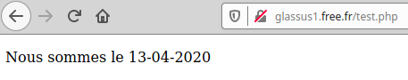

Pages web et interactions⚓︎

1. Le cas le plus simple : la même page pour tout le monde⚓︎

Nous allons tout d'abord considérer le cas où le serveur renvoie une page unique, identique pour tous les utilisateurs. De plus, l'utilisateur ne pourra pas agir sur sa page : il n'y a aucune interactivité.
Exemple de page statique côté serveur et côté utilisateur : - cette merveille de page web. - plus complète, mais tout aussi statique : cette page Wikipedia consacrée à John Conway.
1.1 HTML pur⚓︎
Lorsque le client demande au serveur le contenu d'une page web, celui-ci lui renvoie, dans le cas le plus simple, une simple page html.
HTML est un langage dit « à balises ». Ce n'est pas à proprement parler un langage de programmation, mais plutôt un langage de description de contenu.
Il a été inventé en 1992 par Tim Berners-Lee. La version actuellement utilisée est le html5.
Exemple de page web minimale
1 2 3 4 5 6 7 8 9 10 11 12 13 14 15 16 17 18 19 20 21 | |
Vous pouvez contempler ici le rendu de cette magnifique page.
Exercice 1⚓︎
- Créez un dossier contenant un fichier
mapage.html. - Créez une page contenant une image et un lien vers le site du lycée.
- Vous pouvez aussi utiliser un éditeur en ligne avec rendu instantané, du type https://www.w3schools.com/tryit/
1.2 HTML + CSS⚓︎
L'acronyme CSS signifie Cascading Style Sheets. L'idée est de regrouper dans un seul fichier toutes les informations relatives à la mise en forme des éléments de la page html.
De manière très simplifiée, on peut dire que le fichier html s'occupe du fond tandis que le fichier css s'occupe de la forme.
Le fichier CSS (souvent nommé style.css) doit être référencé au début du fichier html , au sein de la balise <head>.
Exemple minimal de couple html / css :
-
fichier
index.html:1 2 3 4 5 6 7 8 9 10 11 12 13 14 15
<!DOCTYPE html> <html> <head> <meta charset="utf-8"> <title>page test</title> <link href="style.css" rel="stylesheet" type="text/css" /> </head> <body> <p> <h1> Ceci est un titre de niveau 1 </h1> Mais sans rien d'intéressant. <h2> Ceci est un titre de niveau 2 </h2> </p> </body> </html> -
fichier
style.css:
1 2 3 4 5 6 7 8 9 | |
Vous pouvez contempler à l'adresse https://exemplehtmlcss--g-lassus.repl.co le nouveau rendu de cette encore plus magnifique page.
En savoir plus - le cours d'OpenClassrooms : https://openclassrooms.com/fr/courses/1603881-apprenez-a-creer-votre-site-web-avec-html5-et-css3
Exercice 2⚓︎
Reprenez votre page de l'exercice 1 et rajoutez une feuille de style.
Exercice 3⚓︎
- Allez sur le site http://sudouest.fr, et affichez l'inspecteur d'élement de votre navigateur (généralement accessible en appuyant sur
F12) - Modifiez le plus possible les attributs de style de la page.
2. Quand le client peut agir sur sa page : exemple avec JavaScript⚓︎

Jusqu'à présent, la page web envoyée par le serveur est : 1. identique quel que soit le client. 2. statique après réception sur l'ordinateur du client.
Le JavaScript va venir régler le problème n°2 : il est possible de fabriquer une page sur laquelle le client va pouvoir agir localement, sans avoir à redemander une nouvelle page au serveur.
Inventé en 1995 par Brendan Eich pour le navigateur Netscape, le langage JavaScript s'est imposé comme la norme auprès de tous les navigateurs pour apporter de l'interactivité aux pages web.
Exemple minimal de couple html / javascript :
Notre fichier index.html fait référence, au sein d'une balise <script>, à un fichier externe script.js qui contiendra notre code JavaScript.
-
fichier
index.html:1 2 3 4 5 6 7 8 9 10 11 12 13 14 15 16 17 18 19 20 21 22 23 24 25 26 27 28 29 30
<!DOCTYPE html> <html> <head> <meta charset="utf-8"> <title>un peu d'action</title> <link href="style.css" rel="stylesheet" type="text/css" /> </head> <body> <script src="script.js"></script> <p> <h2>Une page web extrêmement dynamique</h2> </p> <div> <label>Changez la couleur d'arrière-plan:</label> <button type="button" onclick="choix('yellow');">jaune</button> <button type="button" onclick="choix('green');">vert</button> <button type="button" onclick="choix('purple');">violet</button> </div> <div> <p> En JavaScript, le nom de la couleur choisie est : </p> <p id="resultat"></p> </div> </body> </html> -
fichier
script.js:1 2 3 4
function choix(color){ document.body.style.background = color; document.getElementById("resultat").innerHTML=color; }
Le résultat de cette page peut être consulté à l'adresse https://exemplejs.g-lassus.repl.co.
Commentaires
- Au sein du bouton déclaré par la balise
button, l'attributonclickreçoit le nom d'une fonction déclarée à l'intérieur du fichierscript.js, ici la fonctionchoix(). - Cette fonction nous permet de modifier à la fois l'aspect esthétique de la page (changement de la couleur de background) mais aussi le contenu de cette page, en faisant afficher le nom de la couleur.
La puissance du JavaScript permet de réaliser aujourd'hui des interfaces utilisateurs très complexes au sein d'un navigateur, équivalentes à celles produites par des logiciels externes (pensez à Discord, par ex.). Bien sûr, dans ces cas complexes, le serveur est aussi sollicité pour modifier la page, comme nous le verrons en partie 3.
En savoir plus - le guide JavaScript de la fondation Mozilla : https://developer.mozilla.org/fr/docs/Web/JavaScript/Guide - le cours d'OpenClassrooms : https://openclassrooms.com/fr/courses/2984401-apprenez-a-coder-avec-javascript
Exercice 4⚓︎
- Reprenez votre page créée sur repl.it aux exercices précédents et rajoutez du JavaScript pour la rendre dynamique. Faites ce que vous voulez !
3. Quand la page est fabriquée à la demande pour le client : exemple avec PHP⚓︎

Rappelons que toutes les pages que nous avons créées jusqu'à présent sont uniformément envoyées par le serveur au client. Aucune «préparation» de la page en amont n'a lieu sur le serveur, aucun dialogue n'a lieu avec le serveur une fois que la page a été livrée. Évidemment, si le web était comme ceci, il ne serait qu'une gigantesque bibliothèque en consultation seule (ce fut le cas pendant longtemps, et ce qui n'était déjà pas si mal).
Les langages serveurs, parmi lesquels PHP (présent sur environ 80% des serveurs), Python (via le framework Django), Java, Ruby, C#, permettent de rajouter de l'interactivité côté serveur.
Il convient de rappeler la différence fondamentale entre une page statique (côté serveur) et une page dynamique (côté serveur) :
3.1 Page statique (côté serveur) :⚓︎
Lors d'une requête d'un client vers un serveur, si le client demande la page index.html, une copie exacte du fichier index.html est transmise au client sur sa machine.
Exemple : la page http://glassus1.free.fr/interesting.html que vous avez déjà consultée se trouve telle quelle sur le serveur mis à disposition par Free pour l'hébergement des pages personnelles :

Depuis votre navigateur, l'affichage du code-source (par Ctrl-U) vous donnera le fichier html tel qu'il était stocké sur le serveur.
3.2 Page dynamique (côté serveur) :⚓︎
Lors d'une requête d'un client vers un serveur, si le client demande la page test.php, un code html est généré à partir du fichier test.php puis est transmise au client sur sa machine. Le fichier transmis ne contient plus de balises php, il ne comporte que des balises html classiques.
Exemple : la consultation de la page http://glassus1.free.fr/test.php va renvoyer la page suivante :

dont le code-source est :

Notez bien que ce code-source ne contient que du html.
Allons regarder cette page du côté du serveur :

Le contenu de cette page est :
1 2 3 4 5 6 7 8 9 10 11 12 13 14 15 | |
On y repère la balise <?php> :
1 2 3 4 | |
php a donc généré, lors de l'appel au serveur, le code html :
1 | |
Voilà comment un serveur peut adapter la page qu'il renvoie, suivant l'utilisateur qui la demande. Nous verrons prochainement comment par des requêtes le client peut envoyer des paramètres au serveur, et comment celui-ci modifie sa réponse en conséquence.
En savoir plus : https://www.php.net/manual/fr/tutorial.firstpage.php
Exercice 5⚓︎
- Allez sur https://repl.it/ , et créez un nouveau repl.it en choisissant PHP Web Server.
- Créez une page renvoyant le système d'exploitation de l'utilisateur.